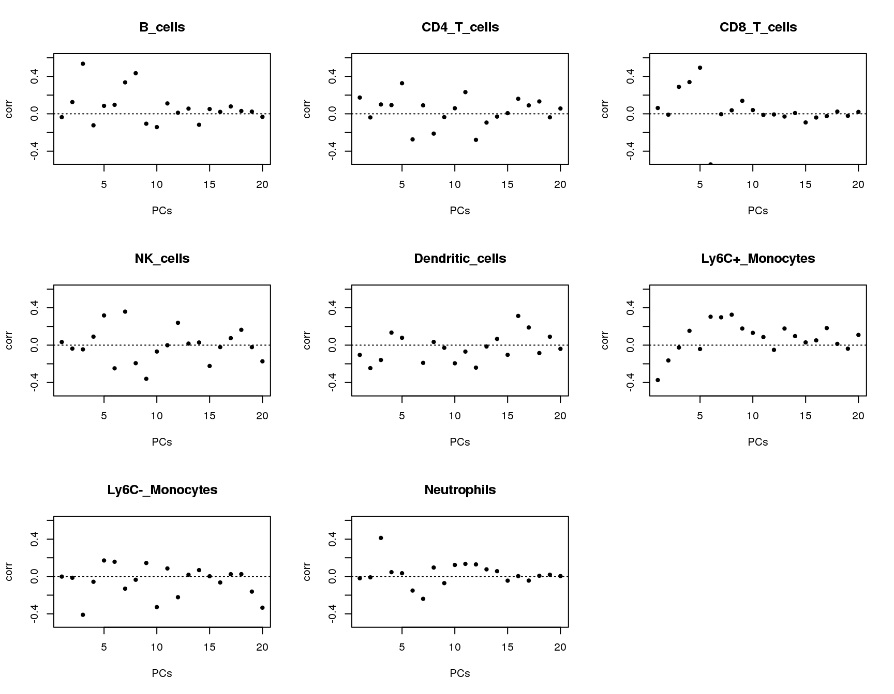
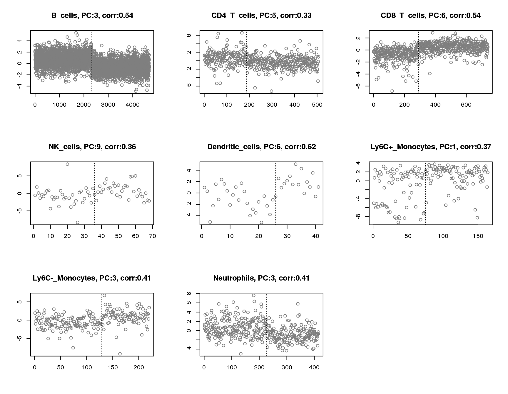
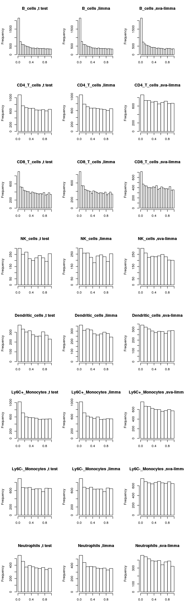

Last updated: 2020-03-04
Checks: 7 0
Knit directory: misc/
This reproducible R Markdown analysis was created with workflowr (version 1.6.0). The Checks tab describes the reproducibility checks that were applied when the results were created. The Past versions tab lists the development history.
Great! Since the R Markdown file has been committed to the Git repository, you know the exact version of the code that produced these results.
Great job! The global environment was empty. Objects defined in the global environment can affect the analysis in your R Markdown file in unknown ways. For reproduciblity it’s best to always run the code in an empty environment.
The command set.seed(20191122) was run prior to running the code in the R Markdown file. Setting a seed ensures that any results that rely on randomness, e.g. subsampling or permutations, are reproducible.
Great job! Recording the operating system, R version, and package versions is critical for reproducibility.
Nice! There were no cached chunks for this analysis, so you can be confident that you successfully produced the results during this run.
Great job! Using relative paths to the files within your workflowr project makes it easier to run your code on other machines.
Great! You are using Git for version control. Tracking code development and connecting the code version to the results is critical for reproducibility. The version displayed above was the version of the Git repository at the time these results were generated.
Note that you need to be careful to ensure that all relevant files for the analysis have been committed to Git prior to generating the results (you can use wflow_publish or wflow_git_commit). workflowr only checks the R Markdown file, but you know if there are other scripts or data files that it depends on. Below is the status of the Git repository when the results were generated:
Ignored files:
Ignored: .Rhistory
Ignored: .Rproj.user/
Untracked files:
Untracked: analysis/methylation.Rmd
Untracked: code/Rplots.pdf
Untracked: code/sccytokines.R
Untracked: data/bart/
Untracked: data/cytokine/DE_controls_output_filter10.RData
Untracked: data/cytokine/DE_controls_output_filter10_addlimma.RData
Untracked: data/cytokine/test.RData
Untracked: data/cytokine_normalized.RData
Untracked: data/mout_high_alpha0.RData
Untracked: data/mout_high_alpha1.RData
Unstaged changes:
Deleted: data/mout_high.RData
Modified: data/sva_sva_high.RData
Note that any generated files, e.g. HTML, png, CSS, etc., are not included in this status report because it is ok for generated content to have uncommitted changes.
These are the previous versions of the R Markdown and HTML files. If you’ve configured a remote Git repository (see ?wflow_git_remote), click on the hyperlinks in the table below to view them.
| File | Version | Author | Date | Message |
|---|---|---|---|---|
| html | 03723b0 | DongyueXie | 2020-03-04 | Build site. |
| Rmd | 346e0d2 | DongyueXie | 2020-03-04 | wflow_publish(“analysis/sccytokines_filter10.Rmd”) |
| html | c84ea11 | DongyueXie | 2020-02-28 | Build site. |
| Rmd | 6b77cc3 | DongyueXie | 2020-02-28 | wflow_publish(“analysis/sccytokines_filter10.Rmd”) |
| html | eebc92d | DongyueXie | 2020-02-28 | Build site. |
| Rmd | 9bf5722 | DongyueXie | 2020-02-28 | wflow_publish(“analysis/sccytokines_filter10.Rmd”) |
See if sva works when comparing two control groups in single cell cytokine study.
Focus on 8 types of cells, B_cells, CD4_T_cells, CD8_T_cells, NK_cells, Dendritic-cells, Ly6C+, Ly6C-,Neutrolphils.
Number of cells in each control group:
load('data/cytokine/DE_controls_output_filter10_addlimma.RData')
n.sample = c()
for(cell in names(output)){
n.sample = rbind(n.sample,c(sum(output[[cell]]$group_idx),sum(1-output[[cell]]$group_idx)))
}
rownames(n.sample) = names(output)
colnames(n.sample) = c('Ctrl-1','Ctrl-2')
knitr::kable(n.sample,caption = 'Number of samples')| Ctrl-1 | Ctrl-2 | |
|---|---|---|
| B_cells | 2326 | 2348 |
| CD4_T_cells | 188 | 318 |
| CD8_T_cells | 291 | 448 |
| NK_cells | 36 | 32 |
| Dendritic_cells | 26 | 15 |
| Ly6C+_Monocytes | 75 | 89 |
| Ly6C-_Monocytes | 128 | 92 |
| Neutrophils | 227 | 188 |
Number of genes with >= 10 non-zero elements in two control groups.
n.gene = c(14853)
for(cell in names(output)){
n.gene = rbind(n.gene,c(14853-length(output[[cell]]$rm.idx)))
}
rownames(n.gene) = c('Total',names(output))
knitr::kable(n.gene,caption = 'Number of genes considered',col.names = '#genes')| #genes | |
|---|---|
| Total | 14853 |
| B_cells | 10287 |
| CD4_T_cells | 7098 |
| CD8_T_cells | 8340 |
| NK_cells | 2369 |
| Dendritic_cells | 2920 |
| Ly6C+_Monocytes | 6215 |
| Ly6C-_Monocytes | 6711 |
| Neutrophils | 3918 |
Plot of correlations between groups and first 20 principle components.
par(mfrow=c(3,3))
for(cell in names(output)){
plot(output[[cell]]$pc.cor[1:20],xlab='PCs',ylab='corr',main=paste(cell),ylim = c(-0.5,0.6),pch=20)
abline(h=0,lty=3)
}
| Version | Author | Date |
|---|---|---|
| eebc92d | DongyueXie | 2020-02-28 |
Plot of principle component that has maximum absolute correlation with groups for each cell. Vertical line separates two groups.
par(mfrow=c(3,3))
for(cell in names(output)){
plot(output[[cell]]$pc.cor.max,xlab='',ylab='',
main=paste(cell,', PC:',which.max(abs(output[[cell]]$pc.cor)),', corr:',round(max(abs(output[[cell]]$pc.cor)),2),sep=''),pch=1,col='grey50')
abline(v=sum(output[[cell]]$group_idx),lty=3)
}
| Version | Author | Date |
|---|---|---|
| eebc92d | DongyueXie | 2020-02-28 |
Now compare distributions of p-values from t-test, limma and sva-limma:
par(mfrow=c(8,3))
for(cell in names(output)){
hist(output[[cell]]$pvalue_t,main=paste(cell, ',t test'),xlab='')
hist(output[[cell]]$pvalue_limma,main=paste(cell, ',limma'),xlab='')
hist(output[[cell]]$pvalue_sva_limma,main=paste(cell, ',sva-limma'),xlab='')
}
Number of surrogate variables: based on the default method in sva - a permutation procedure originally prooposed by Buja and Eyuboglu 1992
n.sv = c()
for(cell in names(output)){
n.sv = rbind(n.sv,output[[cell]]$sva_sva$n.sv)
}
rownames(n.sv) = names(output)
colnames(n.sv) = '#sv'
knitr::kable(n.sv,caption = 'Number of surrogate variables')| #sv | |
|---|---|
| B_cells | 25 |
| CD4_T_cells | 105 |
| CD8_T_cells | 112 |
| NK_cells | 24 |
| Dendritic_cells | 8 |
| Ly6C+_Monocytes | 22 |
| Ly6C-_Monocytes | 65 |
| Neutrophils | 60 |
The number of significant genes at \(fdr=0.05\) by BH procedure.
par(mfrow=c(1,1))
n.sig = c()
for(cell in names(output)){
n.sig = rbind(n.sig,c(length(output[[cell]]$rej.idx.ttest),length(output[[cell]]$rej.idx.limma),length(output[[cell]]$rej.idx.sva)))
}
rownames(n.sig) = names(output)
colnames(n.sig) = c('t-test','limma','sva-limma')
knitr::kable(n.sig,caption = 'Number of significant genes at fdr=0.05')| t-test | limma | sva-limma | |
|---|---|---|---|
| B_cells | 948 | 949 | 926 |
| CD4_T_cells | 30 | 35 | 15 |
| CD8_T_cells | 107 | 105 | 73 |
| NK_cells | 2 | 4 | 0 |
| Dendritic_cells | 0 | 0 | 0 |
| Ly6C+_Monocytes | 34 | 39 | 5 |
| Ly6C-_Monocytes | 18 | 16 | 1 |
| Neutrophils | 6 | 8 | 0 |
The number of significant genes at \(fdr=0.01\) by BH procedure.
BH = function(p,alpha=0.05){
n=length(p)
i=rank(p)
idx = which(p<=(i/n*alpha))
if(length(idx)==0){
NULL
}else{
i0= max(i[idx])
rej.idx = which(i<=i0)
rej.idx
}
}
n.sig = c()
for(cell in names(output)){
n.sig = rbind(n.sig,c(length(BH(output[[cell]]$pvalue_t,0.01)),length(BH(output[[cell]]$pvalue_limma,0.01)),
length(BH(output[[cell]]$pvalue_sva_limma,0.01))))
}
rownames(n.sig) = names(output)
colnames(n.sig) = c('t-test','limma','sva-limma')
knitr::kable(n.sig,caption = 'Number of significant genes at fdr=0.01')| t-test | limma | sva-limma | |
|---|---|---|---|
| B_cells | 512 | 510 | 512 |
| CD4_T_cells | 20 | 23 | 9 |
| CD8_T_cells | 59 | 63 | 45 |
| NK_cells | 2 | 2 | 0 |
| Dendritic_cells | 0 | 0 | 0 |
| Ly6C+_Monocytes | 14 | 20 | 1 |
| Ly6C-_Monocytes | 12 | 9 | 1 |
| Neutrophils | 0 | 0 | 0 |
sessionInfo()R version 3.5.1 (2018-07-02)
Platform: x86_64-pc-linux-gnu (64-bit)
Running under: Scientific Linux 7.4 (Nitrogen)
Matrix products: default
BLAS/LAPACK: /software/openblas-0.2.19-el7-x86_64/lib/libopenblas_haswellp-r0.2.19.so
locale:
[1] LC_CTYPE=en_US.UTF-8 LC_NUMERIC=C
[3] LC_TIME=en_US.UTF-8 LC_COLLATE=en_US.UTF-8
[5] LC_MONETARY=en_US.UTF-8 LC_MESSAGES=en_US.UTF-8
[7] LC_PAPER=en_US.UTF-8 LC_NAME=C
[9] LC_ADDRESS=C LC_TELEPHONE=C
[11] LC_MEASUREMENT=en_US.UTF-8 LC_IDENTIFICATION=C
attached base packages:
[1] stats graphics grDevices utils datasets methods base
loaded via a namespace (and not attached):
[1] workflowr_1.6.0 Rcpp_1.0.2 digest_0.6.18 later_0.7.5
[5] rprojroot_1.3-2 R6_2.3.0 backports_1.1.2 git2r_0.26.1
[9] magrittr_1.5 evaluate_0.12 highr_0.7 stringi_1.2.4
[13] fs_1.3.1 promises_1.0.1 whisker_0.3-2 rmarkdown_1.10
[17] tools_3.5.1 stringr_1.3.1 glue_1.3.0 httpuv_1.4.5
[21] yaml_2.2.0 compiler_3.5.1 htmltools_0.3.6 knitr_1.20